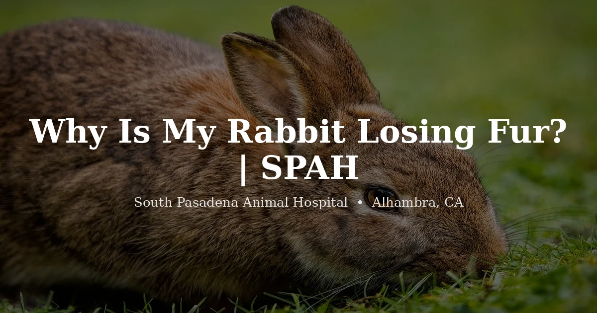

October 14, 2026 · 6 min read
Why Is My Rabbit Losing Fur?

When an owner points out that their rabbit is losing fur, the first thing we do is look past the fur to the skin underneath, because that's where the answer usually is. A rabbit shedding a snowstorm of loose fur with calm, healthy skin beneath is a very different animal from one with a raw, flaky bald patch. Rabbits lose fur for a whole range of reasons, from completely normal to "let's get this treated," and sorting out which is mostly about what the skin and the rabbit are telling you.
Let's start with the one that fools people most often.
A normal molt (which can look alarming)
Rabbits molt, and some rabbits molt dramatically. Fur can come out in loose tufts when you pet them, the coat can go patchy and uneven for a week or two, and you may find a surprising amount of fluff around the enclosure. If the skin underneath looks clean and healthy and your rabbit is comfortable and well, that's a molt. New coat is growing in under the old. Brushing regularly during a heavy molt helps, and it matters for another reason: rabbits groom constantly and can't vomit, so swallowing a lot of loose fur isn't good for their gut.
Mites and skin parasites
Now the medical side. Fur mites, often nicknamed "walking dandruff" because you can sometimes see the flakes moving, cause scurfy, flaky skin and fur loss, usually across the back, shoulders, and neck, and they can be itchy. Ear mites are a cousin problem, producing crusty, cornflake-like buildup inside the ears. Both need a vet to confirm and treat, both can pass to other pets in the house, and some can even affect people, so they're not a wait-and-see.
Ringworm
Despite the name, ringworm is a fungus. In rabbits it tends to show up as circular patches of fur loss with flaky or crusty skin, often starting around the head, ears, and face. It's contagious to other animals and to people, so if anyone in the household develops a round, scaly patch, mention it. A vet can confirm it and guide treatment.
Barbering and fur-pulling
Sometimes the fur isn't falling out. It's being removed. A rabbit may over-groom or chew its own fur, or a bonded partner may barber a cage mate, often out of boredom or stress; the giveaway is stubbly, broken fur rather than smooth bald skin. And a classic one: an unspayed female pulling fur from her chest, belly, or dewlap to build a nest is usually having a false pregnancy, a hormonal behavior that comes and goes. Because fur-pulling can also mean a spot is painful, it's worth having the skin looked at rather than assuming it's just a habit.
Urine scald and wet fur loss
Fur loss on the rear end, inner thighs, or belly with damp, inflamed skin often means urine is sitting against the skin. What we call urine scald. That's usually a sign of an underlying problem that's keeping the rabbit from posturing or grooming normally, such as pain, arthritis, bladder issues, or being overweight. It's uncomfortable and tends to get worse, so it's worth sorting out the root cause.
When fur loss needs a vet
See a vet if your rabbit:
- Has true bald patches rather than an even, all-over molt
- Has red, flaky, scabby, or broken skin, or is clearly itchy
- Has crusty buildup in or around the ears
- Has a damp, soiled, or sore rear end with fur loss
- Is losing fur along with weight loss or any sign of feeling unwell
We're a rabbit-savvy practice and see skin issues routinely at our rabbit vet in Alhambra, and rabbit skin problems rarely clear up on their own, so sooner is better. Our guides to GI stasis and whether rabbits get fleas are useful companions, and our pricing page explains what a visit involves.
Frequently Asked Questions
Is it normal for rabbits to lose fur?
A good amount, yes. Rabbits molt, and some molts are dramatic. Fur comes out in tufts and the coat looks patchy for a week or two while a new one grows in. That's normal if the skin beneath is healthy and your rabbit is comfortable. Bald patches with red, flaky, or scabby skin, or fur loss with itching, is not a molt and should be checked.
Can mites cause fur loss in rabbits?
Yes. Fur mites ("walking dandruff") cause flaky, scurfy skin and fur loss, usually along the back and neck, and can be itchy; ear mites cause crusty buildup in the ears. Both need veterinary treatment, can spread to other pets, and some affect people, so they're worth addressing promptly.
Why is my rabbit pulling out its own fur?
An unspayed female pulling fur from her chest, belly, or dewlap to line a nest is usually a false pregnancy. A hormonal behavior that comes and goes. Rabbits may also barber from boredom, stress, or because an area hurts. Since it can have a medical driver, it's worth a vet checking the skin and ruling out pain.
When should I take my rabbit to the vet for fur loss?
See a vet for true bald patches rather than an even molt, red/flaky/scabby or broken skin, itching, crusty ears, or fur loss with weight loss, a soiled rear end, or any sign of feeling unwell. Rabbit skin problems rarely clear on their own.